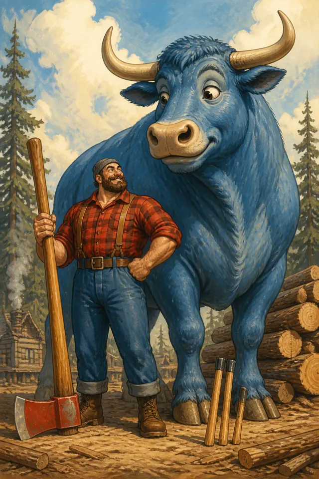
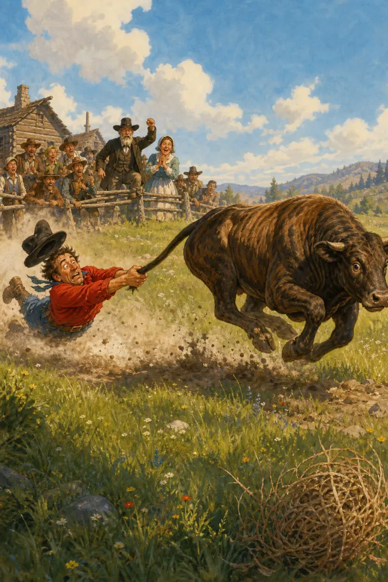
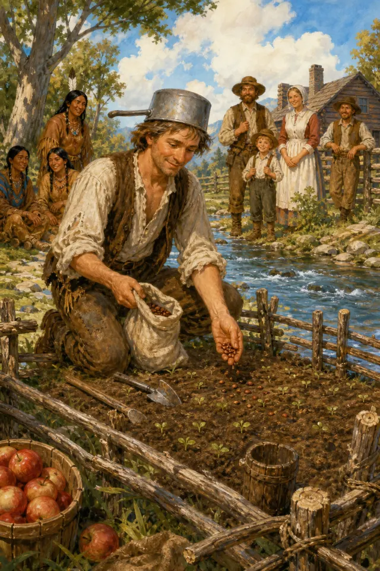

American folk and tall tales
Paul Bunyan
Age: 5+ · Popularity: Very High · Read time: 3 min read
Characters: Paul Bunyan, Babe the Blue Ox
5 fairy tales
American folk and tall tales on Fairy Tales by Kamu: 5 tales for families, bedtime reading, and children who enjoy classic stories, with illustrations and online reading.

Age: 5+ · Popularity: Very High · Read time: 3 min read
Characters: Paul Bunyan, Babe the Blue Ox

Age: 7+ · Popularity: Very High · Read time: 10 min read
Characters: John Henry

Age: 7+ · Popularity: High · Read time: 22 min read
Characters: Pecos Bill, Slue-Foot Sue

Age: 8+ · Popularity: Medium · Read time: 13 min read
Characters: Mike Fink

Age: 5+ · Popularity: High · Read time: 4 min read
Characters: Johnny Appleseed